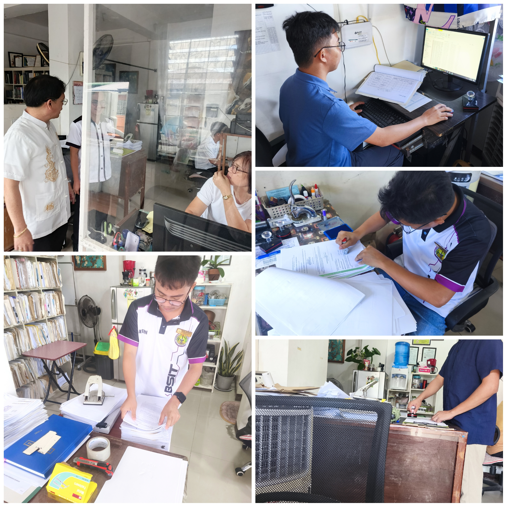

CHAPTER III: INTERNSHIP EXPERIENCES
WEEKLY ACCOMPLISHMENT REPORT

Status
Accomplished
Problems Met
None
🚀 Key Accomplishments
Introduction to attorney and staff...
💡 Skills Learned
📊 Full Internship Log
| Date | Activity | Problems Met | Remarks |
|---|
DAILY TIME RECORD (DTR)
486
Total Hours
61
Working Days
8
Hours Per Day
| Date | Description / Activities | Hours |
|---|
INTERNSHIP PROGRESS REPORT
Performance Summary
| # | Internship Objectives | Work Status | Problems Met |
|---|---|---|---|
| 1 | To understand the office environment, staff roles, and assigned tasks. | Accomplished | None |
| 2 | To learn the process of notarizing documents. | Accomplished | None |
| 3 | To learn how to prepare and organize documents for notarization. | Accomplished | None |
| 4 | To develop skills in filing and organizing documents using alphabetical order. | Accomplished | None |
| 5 | To learn how to scan documents and convert them into PDF files. | Accomplished | None |
| 6 | To develop skills in compressing and managing digital files for email backup. | Accomplished | None |
| 7 | To learn how to record information in the notarial register. | Accomplished | None |
| 8 | To improve accuracy in encoding office documents and records. | Accomplished | None |
| 9 | To improve communication skills by assisting clients in the office. | Accomplished | None |
| 10 | To understand the workflow and daily procedures in a law office. | Accomplished | None |
| 11 | To learn how to handle and safeguard important documents. | Accomplished | None |
| 12 | To improve overall skills in organization, accuracy, and responsibility in office tasks. | Accomplished | None |
INTERNSHIP ANALYSIS REPORT
1. Setting
The setting was good because: The law office is organized and professional. I could see how the office works and do tasks like notarizing documents, filing papers, scanning, and helping clients. The staff taught me and helped me understand my work.
The setting was limited by: The office uses manual ways to handle documents. We scan, compress, and send files by email. This takes a lot of time and can be slow sometimes.
Initial Analysis: At first, I thought the office only did notarization and legal consultation. I learned that organizing documents and keeping records is very important too.
2. Site Supervisor
Greatest Contribution: The supervisor taught me how to handle documents correctly and follow office rules. They also guided me on how to do tasks carefully and professionally.
Level of Supervision: The supervisor gave clear instructions and helped me whenever I needed guidance. Once I understood my tasks, I was allowed to work on my own.
Areas for Growth: I would like to learn more about different types of legal documents and how the attorney manages client consultations and legal procedures.
3. Environmental Conditions
Influential Event: Helping with notarized documents and talking to clients showed me the importance of being careful, organized, and polite. It taught me how to handle tasks under real office conditions.
Impactful Issue: Doing most of the work manually and sending files by email takes a lot of time. Sometimes large files need extra work to compress before sending, which can slow the office workflow.
Diversity Opportunity: I talked to many different clients and learned how to explain tasks clearly. This helped me improve my communication and problem-solving skills.
4. Self-Assessment
Most Important Learning: I learned that being careful, responsible, and professional is very important when handling legal documents. Accuracy and organization are key.
My Contributions: I helped with notarization, organized files alphabetically, scanned and compressed documents, and managed backups for the attorney’s record.
Future Goals: I want to learn more about attorney’s work during consultations and explore ways to make document handling faster and easier using technology.
Reflection: If I were to repeat this, I would ask more questions, observe more tasks, and be more confident when helping clients.
5. General
Strengthening the Experience: The office could use a simple digital system or website to organize scanned documents and backups. This would save time and reduce repetitive manual work.
Advice for Future Interns: Be active, polite, careful, and ready to learn. Pay attention to details and try to understand both office and technical tasks.
Note: This analysis is for academic reflection purposes and is not shared with the site supervisor.